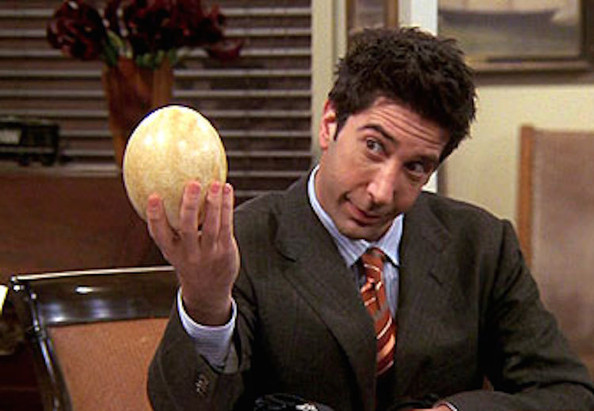

Ross Geller
Ross is Monica's older brother and is a paleontologist and later a professor. He faces challenges in his personal life with multiple divorces throughout the series. His on-again, off-again relationship with Rachel is a central storyline in the series.
Check out some Fun Facts about Ross!
👇

Ross Geller is a paleontologist, and his passion for dinosaurs is a recurring theme throughout the series. His enthusiasm for his work often leads to humorous situations.